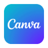
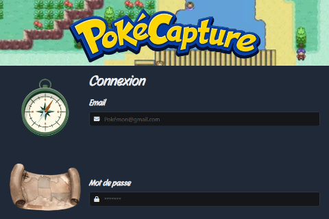
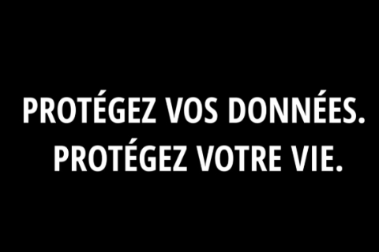
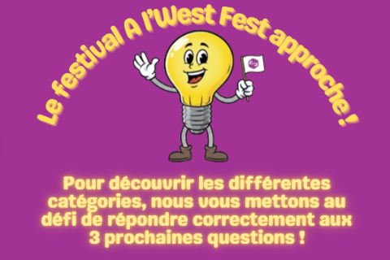
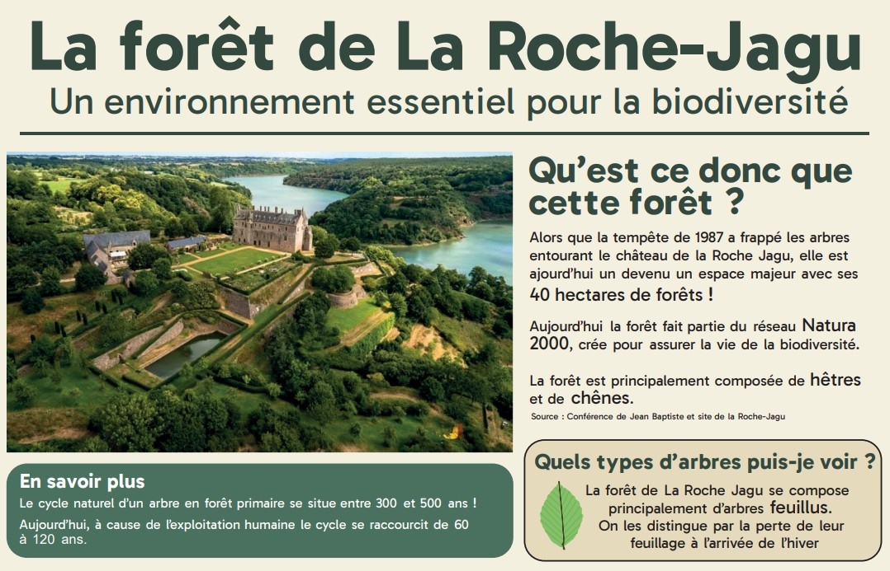
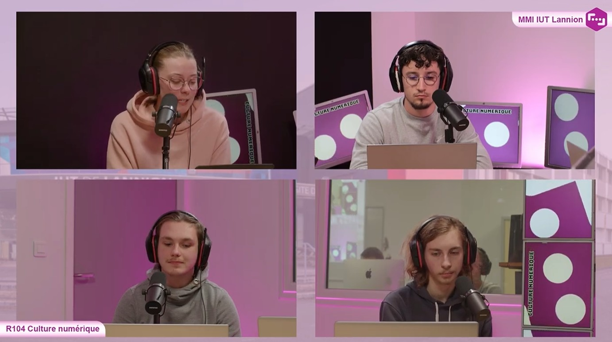
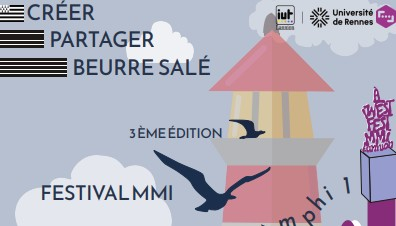
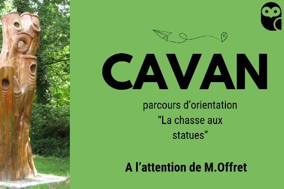
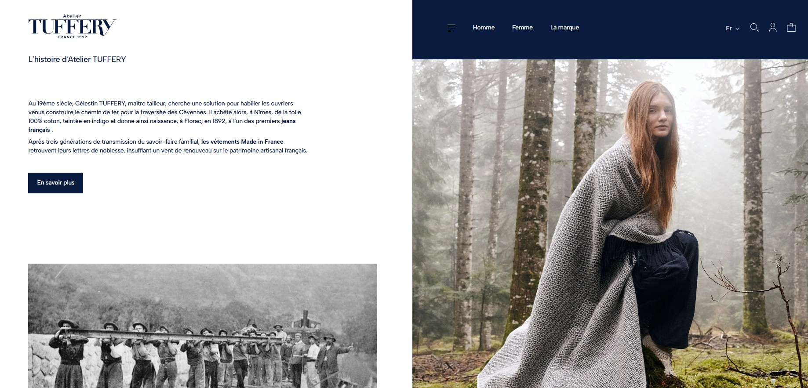

EN SAVOIR PLUS SUR MOI
MA FORMATION
🖱️ BUT Métiers du Multimédia et de l’Internet
IUT de Lannion - 22300
2025 - 2026
Formation pluridisciplinaire : Communication, Marketing, Web, Graphisme, Audio, Photo, Vidéo Gestion de Projet, UX / UI Design
🎓 Baccalauréat général Mention Bien
Lycée Jean Perrin - Rezé 44400
2022 - 2025
Spécialités NSI (Numérique Sciences Informatiques), LLCE (Langues Littératures Cultures Étrangères) Option mathématiques complémentaires
COMPETENCES
MES OUTILS ET LANGAGES

Canva Figma
Figma
 DaVinci
DaVinci
MES PROJETS
Réalisation du site PokeCapture
En savoir plusDans le cadre de la création d’un premier site web, mon projet consistait à réaliser un site de collection de Pokémon, comprenant trois pages : une page d’accueil, une page de collection et une page de description, le tout réalisé avec le framework Bulma.
Réalisation du site PokeCapture
RetourContexte
Dans le cadre de la création d’un premier site web, mon projet consistait à réaliser un site de collection de Pokémon, comprenant trois pages : une page d’accueil, une page de collection et une page de description, le tout réalisé avec le framework Bulma.
Étapes
1. Piste graphique et planche univers
Recherche de trois pistes graphiques différentes pour l’ambiance du site internet et recherche d’images en lien avec ces pistes pour former une planche univers.
2. Maquettage du site internet
Création des wireframes des trois pages du site incluant des interactions sur Figma.
3. Piste graphique et planche univers
Codage en HTML avec Bulma. Création de classes CSS
4. Piste graphique et planche univers
Apprentissage des méthodes pour mettre un site web en ligne.

Compétences
- Générer des pages Web à partir de données structurées
- Exploiter de manière autonome un environnement de développement
- Mettre en ligne une application Web
- Produire des pages Web fluides et efficaces et des interactions simples
Bilan Personnel
Grâce à la création de ce premier site web, j’ai appris à structurer et à mettre en forme le contenu afin de coder et développer mon site efficacement.
Réalisation d’un court-métrage de sensibilisation
En savoir plusÀ travers l’écriture d’une histoire sur le thème de la cybercriminalité, le projet consistait à réaliser un court-métrage d’une minute trente à partir de ce scénario, de la planification des tâches jusqu’au tournage.
Réalisation d’un court-métrage de sensibilisation
RetourContexte
À travers l’écriture d’une histoire sur le thème de la cybercriminalité, le projet consistait à réaliser un court-métrage d’une minute trente à partir de ce scénario, de la planification des tâches jusqu’au tournage.
Étapes
1. Écriture du scénario
Élaboration d’un concept à partir d’un brief. Écriture d’un pitch, d’un synopsis, d’un scénario et d’une note d’intention.
2. Planification du tournage
Attribution des rôles et choix des lieux de tournage. Rédaction de la note de traitement. Réalisation du storyboard et de la shotlist.
3. Réalisation du film
Tournage. Réglage du son, de la vidéo, des acteurs et de la cohérence des images. Enregistrement de la voix off en français et en anglais.
4. Montage vidéo
Assemblage des prises et du son

Compétences
- Tourner et monter une vidéo
- Écrire pour les médias numériques
- Travailler et s’organiser en équipe
- Optimiser les médias en fonction de leurs usages et supports de diffusion
- Traduire un texte dans une langue étrangère
Bilan Personnel
Grâce à ce court-métrage, j’ai participé à ma première réalisation vidéo. Au cours de ce projet, j’ai rencontré plusieurs obstacles avec mon équipe qui m’ont appris à m’adapter à différentes situations et à mieux m’organiser avec mes coéquipiers pour les prochains projets.
Projet de recommandation de communication pour le festival À l’West Fest
En savoir plusDans le cadre d’un projet commandité par l’équipe MMI, je devais concevoir, avec mon équipe, une recommandation de communication numérique pour le festival multimédia du département MMI, À l'West Fest. Cet événement demande aux étudiants de déposer un projet qu’ils ont effectué à travers plusieurs catégories, afin que les meilleurs soient récompensés.
Projet de recommandation de communication pour le festival À l’West Fest
RetourContexte
Dans le cadre d’un projet commandité par l’équipe MMI, je devais concevoir, avec mon équipe, une recommandation de communication numérique pour le festival multimédia du département MMI, À l'West Fest. Cet événement demande aux étudiants de déposer un projet qu’ils ont effectué à travers plusieurs catégories, afin que les meilleurs soient récompensés.
Étapes
1. Conception d’une recommandation marketing
Analyse de l’entreprise via un audit de positionnement et un benchmark des différents concurrents avec un bilan SWOT. Création de personas et recommandations de positionnement et de fonctionnement.
2. Élaboration d’un plan de communication
Conception d’un calendrier des actions et des objectifs de communication avec une première idée de prototypes de communication.
3. Rédaction d’une charte éditoriale
Choix de la palette de couleurs, des thèmes abordés, du ton utilisés...
4. Production de prototypes pour une communication digitale
Rédaction d’un e-mail de promotion du festival ainsi qu’une campagne quiz de posts Instagram visant à faire découvrir aux étudiants les différentes catégories du festival.
5. Présentation
Oral de conclusion, présentant toutes les actions réalisées lors du projet devant le commanditaire

Compétences
- Proposer une stratégie de communication
- Proposer une recommandation marketing
- Réaliser des prototypes numériques
- Se coordonner et se partager les tâches dans une équipe
Bilan Personnel
Grâce à ce projet, j’ai réalisé une première analyse et recommandation marketing à travers un cas existant. Le travail d’équipe m’a fait adopter un rythme efficace et une organisation maîtrisée, que je pourrai réutiliser lors de prochains projets.
Création d’une affiche pour la Roche-Jagu
En savoir plusAprès avoir écouté Jean-Baptiste, travailleur à La Roche-Jagu, je devais réaliser une affiche sur l’un de ses milieux naturels du parc.
Création d’une affiche pour la Roche-Jagu
RetourContexte
Après avoir écouté Jean-Baptiste, travailleur à La Roche-Jagu, je devais réaliser une affiche sur l’un de ses milieux naturels du parc.
Étapes
1. Prise de note des informations
Écoute du commanditaire et prise de notes afin de comprendre le contenu et sélectionner les informations pertinentes à retranscrire dans l’affiche.
2. Création d’une maquette à montrer au commanditaire
Retour sur le contenu et la forme par Jean-Baptiste
3. Correction du contenu
Reformulation, réécriture, réflexion sur la cible et le message de l’affiche
4. Correction de la forme
Remise en place des éléments, du choix des couleurs, de la typographie, ajout d'éléments graphiques
5. Rendu final

Compétences
- Créer, composer et retoucher des visuels
- Optimiser les médias en fonction de leurs usages et supports de diffusion
- Prendre en note des informations et les synthétiser
Bilan Personnel
La réalisation de cette affiche m’a appris à prendre, comprendre et synthétiser des informations afin de les retranscrire ensuite à travers un contenu et une forme accessibles, correspondant à la cible et au message que je souhaite faire passer.
Podcast sur l’IA dans le jeu vidéo
En savoir plusÀ travers la recherche de l’impact de l’intelligence artificielle dans le monde du jeu vidéo, je devais avec d'autres camarades réaliser un podcast abordant les enjeux ainsi que les points positifs et négatifs dans ce domaine.
Podcast sur l’IA dans le jeu vidéo
RetourContexte
À travers la recherche de l’impact de l’intelligence artificielle dans le monde du jeu vidéo, je devais avec d'autres camarades réaliser un podcast abordant les enjeux ainsi que les points positifs et négatifs dans ce domaine.
Étapes
1. Brainstorming
Brouillon de toutes nos connaissances sur le sujet et comment les classer par parties.
2. Documentation
Recherche de contenu à partir de différentes sources et présentation à l’oral.
3. Écriture du script
Choix des rôles, ton à utiliser, bruit sonore à intégrer, et écriture des répliques de chacun
4. Mise à l'oral
Entraînement du ton, de la gestuelle et choix des effets sonores pour rendre le podcast le plus engageant possible
5. Tournage au studio
Pour aller écouter le podcast : cliquer ici

Compétences
- Écrire pour les projets multimédia
- S’exprimer, débattre face à un micro et une caméra
- Mener des recherches documentaires avec des ressources fiables
- Gérer un projet
Bilan Personnel
Avec ce projet de podcast, j’ai appris à bien rechercher mes sources afin de rendre un exposé juste et pertinent, quels outils utiliser et comment les exploiter à l’oral. Enfin, j’ai amélioré mes compétences à l’oral.
Création d’une affiche pour le festival À l’West Fest
En savoir plusAprès avoir analysé la communication du festival À l’West Fest du département MMI, j’étais en charge de créer une affiche de promotion de celui-ci, respectant sa charte graphique et les différentes informations à mettre en avant.
Création d’une affiche pour le festival À l’West Fest
RetourContexte
Après avoir analysé la communication du festival À l’West Fest du département MMI, j’étais en charge de créer une affiche de promotion de celui-ci, respectant sa charte graphique et les différentes informations à mettre en avant.
Étapes
1. Recherche de l’existant/h6>
Recherche d’affiches déjà existantes dans plusieurs catégories afin de trouver de l’inspiration.
2. Mise au propre du brainstorming
Création d’une carte mentale regroupant toutes les idées trouvées.
3. Recherches graphiques
Création de cinq différents croquis de l’affiche.
4. Réalisation de la maquette
Choix d’un croquis et réalisation de la maquette
5. Proposition finale

Compétences
- Créer, composer et retoucher des visuels
- Optimiser les médias en fonction de leurs usages et supports de diffusion
- Produire des pistes graphiques et des planches d’inspiration
Bilan Personnel
Grâce à ce projet, j’ai appris les différentes étapes de création d’une affiche. J’ai également réfléchi à la manière de rendre mon travail original, marquant et facile à comprendre.
Valorisation d’une commune à l’international
En savoir plusÀ travers la recherche d’une commune dans les alentours de Lannion, je devais, avec mes partenaires, analyser comment la rendre attractive pour un public international, en mettant en avant un élément particulier.
Valorisation d’une commune à l’international
RetourContexte
À travers la recherche d’une commune dans les alentours de Lannion, je devais, avec mes partenaires, analyser comment la rendre attractive pour un public international, en mettant en avant un élément particulier.
Étapes
1. Recherche d’une commune et analyse d’un élément à mettre en avant
Recherche d’une commune de moins de 2 000 habitants autour de Lannion afin de renforcer sa visibilité auprès d’un public européen
2. Cahier des charges
Choix de la ville de Cavan. Création d’un projet de chasse aux statues de la ville. Rédaction du cahier des charges.
3. Conception d’une vidéo promotionnelle en anglais
Rédaction de la voix-off en anglais et montage de la vidéo
4. Création d'une affiche
Entraînement du ton, de la gestuelle et choix des effets sonores pour rendre le podcast le plus engageant possible
5. Présentation devant le maire
Présentation du projet devant le maire de la ville

Compétences
- Découvrir les écosystèmes d’innovation numérique
- Budgéter un projet et suivre sa rentabilité
- Gérer un projet avec une méthode classique
- Produire un message écrit ou oral professionnel
- Interagir au sein des organisations
Bilan Personnel
Grâce à ce projet, nous avons reçu des retours pertinents sur nos recherches et travaux directement du commanditaire. C’était mon premier projet professionnel, et il m’a appris à gérer et planifier un projet, à répondre aux attentes et contraintes du commanditaire.
Audit de l’Atelier Tuffery
En savoir plusAfin de pouvoir mettre en application nos apprentissages en marketing, en économie et en droit du numérique, j’ai réalisé en équipe de trois, différents audits sur l'Atelier Tuffery une marque de jeans français.
Audit de l’Atelier Tuffery
RetourContexte
Afin de pouvoir mettre en application nos apprentissages en marketing, en économie et en droit du numérique, j’ai réalisé en équipe de trois, différents audits sur l'Atelier Tuffery une marque de jeans français.
Étapes
1. Audit de contexte et économique
Analyse de l’histoire de la marque, de la proposition de valeur, tableau d’analyse, analyse de la concurrence et analyse stratégique.
2. Audit d’architecture
Représentation de l’architecture du site internet à l’aide de Figma
3. Audit ergonomique
Benchmark, tableau d’analyse et analyse des scores obtenus pour les différentes catégories notées sur le tableau
4. Audit sémiotique
Corpus de communication, comparaison concurrentielle, diagnostic et recommandation stratégique.

Compétences
- Créer, composer et retoucher des visuels
- Optimiser les médias en fonction de leurs usages et supports de diffusion
- Prendre en note des informations et les synthétiser
Bilan Personnel
J’ai appris à utiliser différents outils et méthodes d’analyse pour une entreprise réelle. J’ai ainsi développé mes compétences en réflexion et en analyse afin de proposer des recommandations pertinentes, en accord avec les valeurs et la cible de l’entreprise.